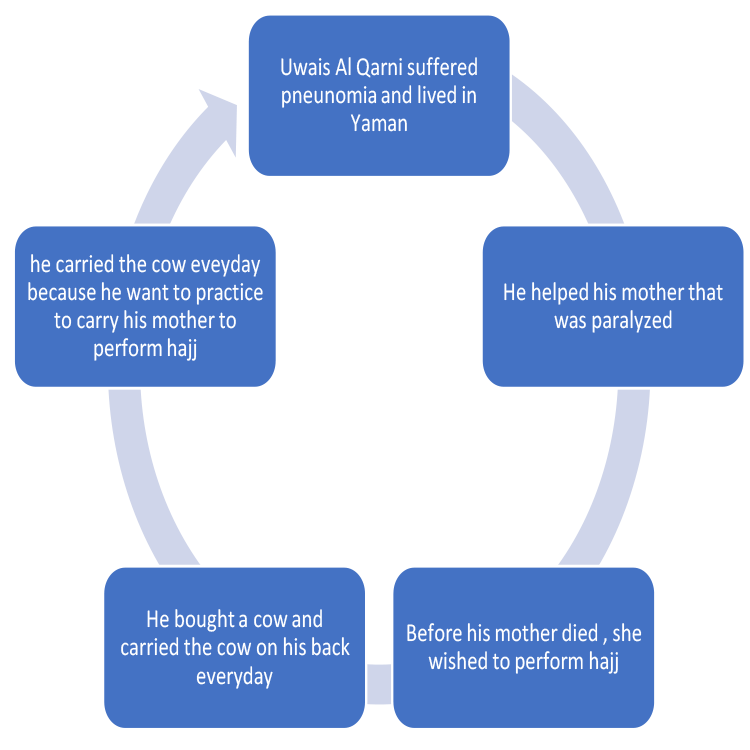

Uwais Al Qarni

Who was Uwais al-Qarni?
Uwais al-Qarni was a man from Yemen who embraced Islam in the lifetime of the Prophet (peace and blessings be upon him), but was not able to come to Medina to visit him since he was in the service of his aging mother. Thus, although he never became a Companion (Sahabi), his status was such that the Prophet (peace be upon him) instructed his Companions that,
“A man called Uwais will come to you from Yemen… whoever amongst you is able to meet him [Uwais], then ask him to pray for your forgiveness,” and that, “Indeed, the best of the Followers [after the generation of my Companions] is a man named Uwais…” [Muslim]
Source:
- http://seekershub.org/ans-blog/2011/10/03/the-story-of-uwais-al-qarni-breaking-his-own-teeth//